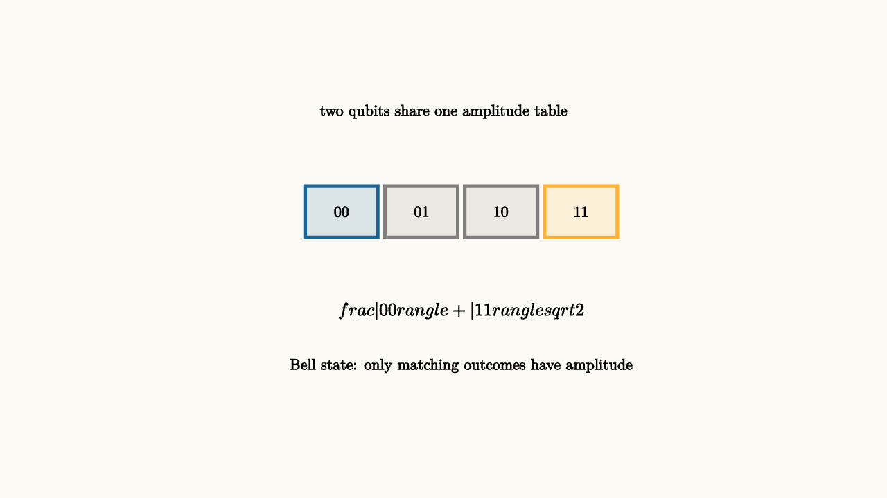

A pair of ordinary coins can be correlated. Someone might prepare them so they always match. When you see the first coin, you can predict the second. That kind of correlation fits inside a classical story because each coin can still be described as having its own face.
Entanglement is a deeper kind of jointness. Two qubits have a single state vector with four basis directions:
Sometimes this vector factors as one qubit state times another. Sometimes it cannot. When there is no way to write the joint state as
the qubits are entangled. The description belongs to the pair.

source
background = [0.985, 0.98, 0.955, 1]
camera = Camera(5.0b)
let Box = |x, y, label, col| block {
. fill{alpha{0.14} col} stroke{col, 3} center{[x, y, 0]} Rect([0.82, 0.58])
. center{[x, y, 0]} Text(label, 0.62)
}
mesh joint = block {
. center{[0, 1.55, 0]} Text("two qubits share one amplitude table", 0.62)
. Box(-1.15, 0.42, "00", BLUE)
. Box(-0.25, 0.42, "01", GRAY)
. Box(0.65, 0.42, "10", GRAY)
. Box(1.55, 0.42, "11", ORANGE)
. center{[0.2, -0.7, 0]} Tex("\\frac{|00\\rangle+|11\\rangle}{\\sqrt2}", 0.72)
. center{[0.2, -1.32, 0]} Text("Bell state: only matching outcomes have amplitude", 0.62)
}
"bell amplitudes"
play Fade(0.7)The Bell state
has perfect matching measurements in the computational basis. Measure the first qubit and get $0$, and the second will also be $0$. Measure the first and get $1$, and the second will also be $1$. Each outcome is still random before the measurement. The certainty lies in the relationship between outcomes.
The relationship becomes more revealing when both qubits are measured in other bases. Bell states keep strong correlations across several carefully chosen measurement directions. Those correlations are the reason Bell experiments can rule out simple local hidden-variable explanations. For computing, the lesson is more modest and more practical: the state vector contains information in correlations, and those correlations can survive basis changes in ways that independent qubits cannot match.
A quick algebra check shows why the Bell state resists factorization. If
then matching the Bell state would require $ad=0$ and $bc=0$, while also keeping both $ac$ and $bd$ nonzero. Those conditions conflict. The missing $01$ and $10$ amplitudes cannot be produced by multiplying two independent one-qubit lists.
This matters because quantum gates can create and use relationships that have no one-qubit summary. The usual Bell-state circuit begins with $|00\rangle$. A Hadamard gate puts the first qubit into a superposition:
Then a controlled-NOT flips the second qubit only on the branch where the first is $1$:
The operation acted locally in the circuit diagram, yet the result is a joint state.
source
background = [0.985, 0.98, 0.955, 1]
camera = Camera(5.0b)
"Prepare"
mesh circuit = block {
. center{[0, 1.45, 0]} Text("start with two independent qubits", 0.62)
. stroke{BLACK, 3} Line(start: [-2.0, 0.35, 0], end: [2.0, 0.35, 0])
. stroke{BLACK, 3} Line(start: [-2.0, -0.35, 0], end: [2.0, -0.35, 0])
. center{[-2.25, 0.35, 0]} Tex("|0\\rangle", 0.60)
. center{[-2.25, -0.35, 0]} Tex("|0\\rangle", 0.60)
. center{[0, -1.25, 0]} Tex("|00\\rangle", 0.72)
}
play Write(0.8)
"Hadamard"
circuit = block {
. center{[0, 1.45, 0]} Text("make the control branch into two paths", 0.62)
. stroke{BLACK, 3} Line(start: [-2.0, 0.35, 0], end: [2.0, 0.35, 0])
. stroke{BLACK, 3} Line(start: [-2.0, -0.35, 0], end: [2.0, -0.35, 0])
. fill{alpha{0.16} GREEN} stroke{GREEN, 3} center{[-0.9, 0.35, 0]} Rect([0.52, 0.44])
. center{[-0.9, 0.35, 0]} Text("H", 0.62)
. center{[0, -1.25, 0]} Tex("\\frac{|00\\rangle+|10\\rangle}{\\sqrt2}", 0.62)
}
play Trans(0.9)
"Controlled Not"
circuit = block {
. center{[0, 1.45, 0]} Text("CNOT ties the branches into a joint state", 0.62)
. stroke{BLACK, 3} Line(start: [-2.0, 0.35, 0], end: [2.0, 0.35, 0])
. stroke{BLACK, 3} Line(start: [-2.0, -0.35, 0], end: [2.0, -0.35, 0])
. fill{alpha{0.16} GREEN} stroke{GREEN, 3} center{[-0.9, 0.35, 0]} Rect([0.52, 0.44])
. center{[-0.9, 0.35, 0]} Text("H", 0.62)
. stroke{ORANGE, 3} Line(start: [0.45, 0.35, 0], end: [0.45, -0.35, 0])
. fill{ORANGE} center{[0.45, 0.35, 0]} Circle(0.1)
. fill{alpha{0.14} ORANGE} stroke{ORANGE, 3} center{[0.45, -0.35, 0]} Circle(0.18)
. center{[0, -1.25, 0]} Tex("\\frac{|00\\rangle+|11\\rangle}{\\sqrt2}", 0.62)
}
play Trans(0.9)Entanglement has a reputation for sounding mystical. The clean computational view is more useful: it is a statement about factorization. Product states can be described by smaller pieces. Entangled states need the combined space.
There is also a guardrail. Entanglement gives one lab no channel for sending a chosen message to another lab by measuring its qubit. Each local measurement result remains random. The correlations appear when the two labs later compare records through ordinary classical communication. Quantum computing uses entanglement inside the processor, where gates and measurements are organized as one designed experiment.
The payoff is that entanglement lets information live in relationships among amplitudes. Algorithms can compare branches, store constraints jointly, and make global properties visible through interference. The resource is subtle: more entanglement by itself gives no guarantee of a faster algorithm. Useful entanglement is shaped by gates so the final measurement has a reason to favor the answer.